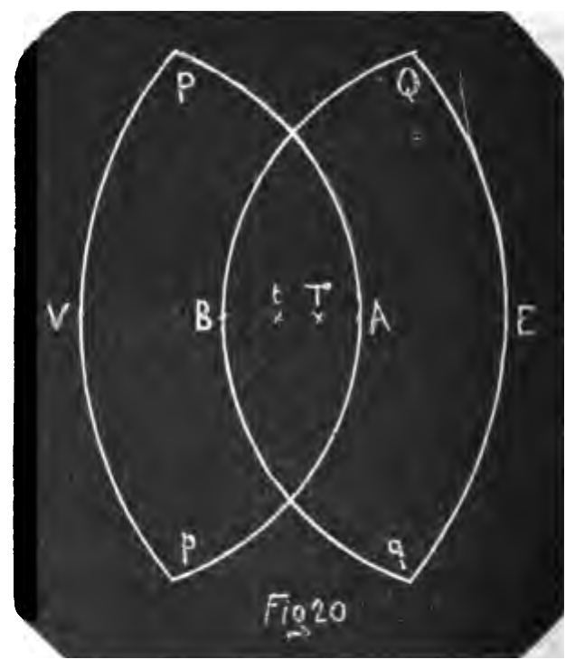

§ 68: Dividere in tre parti eguali una distanza data (Fig. 20)¶
§ 68. Prob. (Fig. 20, folio 0061–folio 0062, pp. 36–37). Dividere una distanza data \(AB\) in tre parti eguali col solo compasso.
Sol. Si prolunghi la \(AB\) da ambo le parti (§ 64) fino ad E ed a V, sicché \(EA = AB = BV\) ed \(EV = 3\,AB\). Col centro V e raggio \(VE\), e col centro E e raggio \(EB\), si descrivano gli archi VE ed EB che si taglino in F ed f. Coi centri F ed f e raggio \(FE = 2\,AB\) si segnino due archi FE e fE che si taglino in T. Sarà \(ET = \frac{4}{3}AB\), e quindi AT \(= \frac{1}{3}AB\); similmente si ottiene t con .

